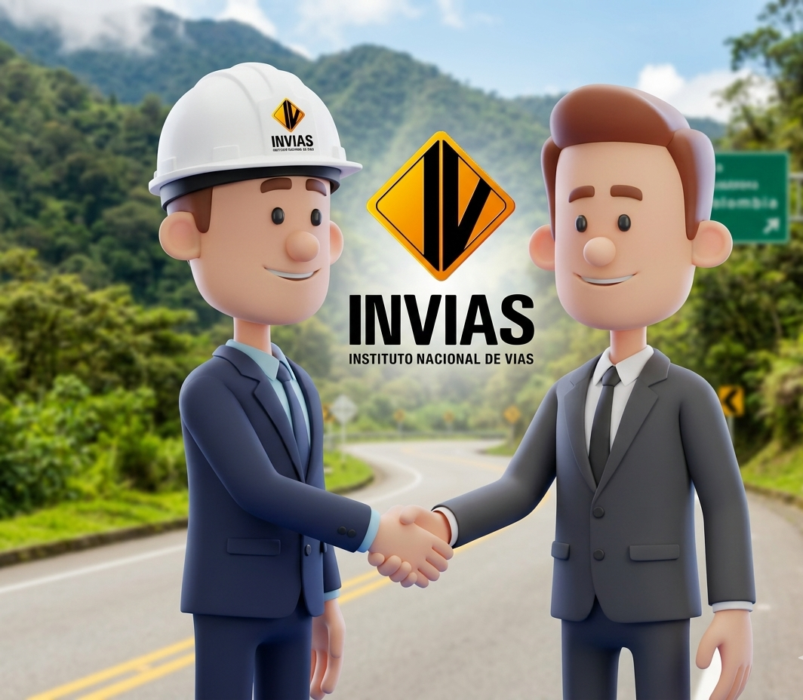

TRIVIA DE INFRAESTRUCTURA
Demuestra tus conocimientos superando las 3 estaciones viales (Básica, Intermedia y Avanzada). Responde correctamente las rondas consecutivas para ganar.

Estación 1: Básica
Cargando...

¡FELICITACIONES!
Has respondido correctamente las 3 rondas de cada estación de manera perfecta.
¡Eres un experto en gestión vial!